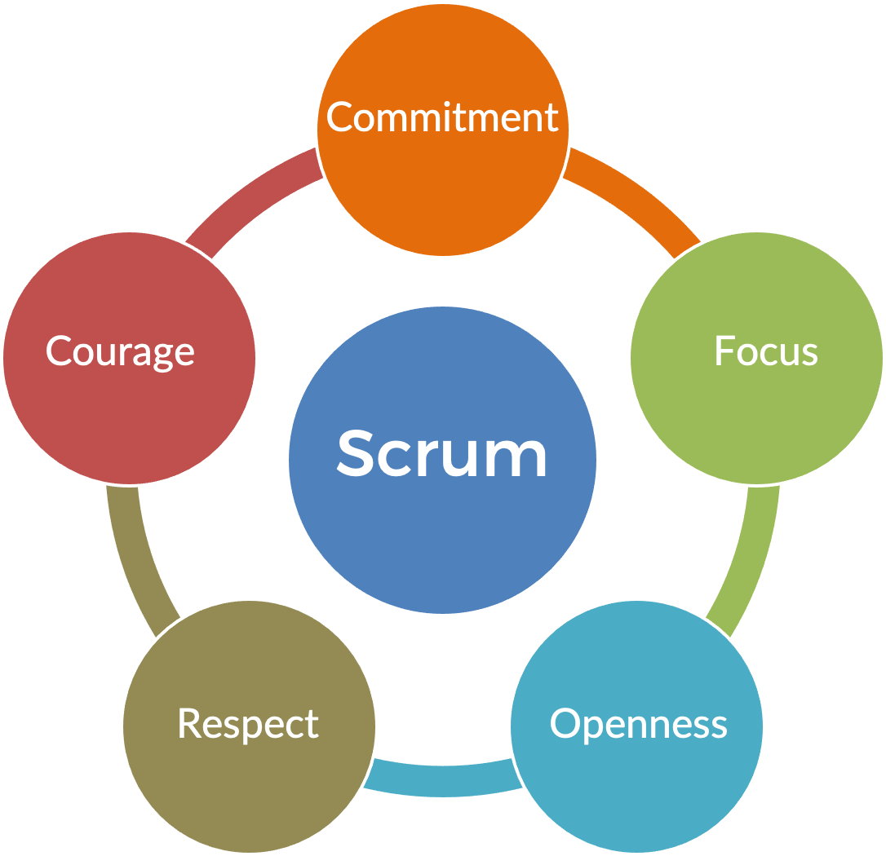

What is Scrum?
Scrum is a framework for project management that emphasizes teamwork, accountability and iterative progress toward a well-defined goal.
Scrum Values
A team’s success with scrum depends on five values: commitment, courage, focus, openness, and respect.
The Five Scrum Values
-
Commitment
People personally commit to achieving the goals of the Scrum team.
-
Focus
Everyone focuses on the work of the Sprint and the goals of the Scrum team.
-
Openness
The Scrum team and its stakeholders agree to be open about all the work and the challenges with performing the work.
-
Respect
Scrum team members respect each other to be capable, independent people.
-
Courage
The Scrum team members have courage to do the right thing and work on tough problems.
The Scrum Team
How do Scrum teams work?
A Scrum team is typically made up of “ten or fewer people,” as outlined by the Scrum Guide. However, the team’s size depends mainly on the project in view. The objective of the Scrum framework is to deliver value to the end-user by following a structure for iterative planning and fast delivery.
For Scrum to be effective, there has to be strong communication, accountability, and collaboration between team members.
The 3 Scrum Roles

Scrum Master
Often viewed as the facilitator, the Scrum master is a servant-leadership position within the Scrum team. The Scrum master’s responsibilities include:
- Facilitating Agile Scrum principles
- Coaching
- Removing roadblocks and distractions
- Mediating
Product Owner
Acts as a mini CEO. Think of them as a decision-maker, liaison for the stakeholder, and advocate for the customer’s needs. A product owner’s responsibilities include:
- Defining the sprint goal
- Managing the product backlog
- Creating a product vision
Developers
Unlike the other roles, the development team isn’t a person but a group of people. They are the technical part of the Scrum team. They are experts in their specific field and can be UX designers, front-end developers, quality testers. The project type will determine the roles needed on the development team, so there isn’t a template for it. The characteristics of a development team are:
- Experts
- Accountable
- Self-organizing
- Cross-functional
Scrum Events
- The Sprint
- Sprint Planning
- Daily Scrum
- Sprint Review
- Sprint Retrospective
What is a Sprint in Scrum?
Sprints are the heartbeat of Scrum, where ideas get turned into value. They are fixed length events of one month or less designed to create a consistent delivery and feedback cadence for the team.
All the work and events necessary to achieve the Sprint Goal (including Sprint Planning, Daily Scrums, Sprint Review, and Sprint Retrospective) happen within the Sprint.
What are the Different Types of Scrum Meetings?
- Sprint planning: A time-boxed event occurs at the beginning of a sprint where the team determines the product backlog items they will work on during that sprint.
- Daily scrum: A 15-minute time-boxed event for the Development Team to synchronize activities and create a plan for the next 24 hours.
- Sprint review: A time-boxed event holds at the end of the Sprint to inspect the Increment and adapt the Product Backlog if needed.
- Sprint retrospective: A time-boxed event for providing an opportunity for the Scrum Team to inspect itself and create a plan for improvements to be enacted during the next Sprint.
Scrum Artifacts
The Scrum has 3 main Artifacts
-
Product Backlog
is an ordered list of everything that is known to be needed in a product based on the product goal. It is constantly evolving and is never complete.
-
Sprint Backlog
is a list of everything that the team commits to achieve in a given sprint. Once created, no one can add to the sprint backlog except the development team.
-
Increment
at the end of every sprint, the team delivers a product increment that is potentially releasable, meaning that it meets their agreed-upon definition of done.
10 reasons why Scrum is great for developers
- Development Team is in control of how much work they pick up
- Development Team determines how to build an increment
- Limited number of people determining what needs to be done
- Clear focus, promoting teamwork and limiting distractions
- All skills required to build the increment are within the team
- Mutual understanding when an increment is completed
- Build the right thing
- Get feedback fast to understand what to do next
- Scrum limits the number of meetings
- Focus on improving as a team